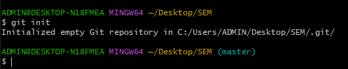
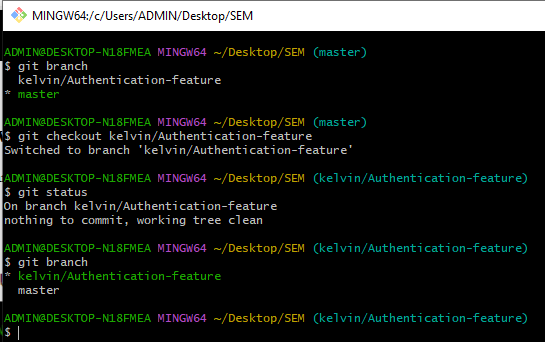

Getting Started With Git and Github
What is Git?
Git is a version control system (VCS) that helps you keep track of changes to your code.
A Version Control System is a tool you use to track, make, and manage changes to your software code. It's also called source control.
Git is considered a version control system (VCS) because it provides a structured way to manage changes to files, especially in software development.
Other version control systems include:
Concurrent Versions System (CVS) : CVS is an open-source VCS, that allows multiple developers to work on the same codebase by maintaining a central repository.
Subversion (SVN) : Subversion is another open-source VCS inspired by CVS which provides centralized version control, where developers share a single repository.
Mercurial (Hg) : Mercurial is a distributed VCS similar to Git which emphasizes on simplicity and ease of use.
Monotone : Monotone is a distributed VCS designed for security and reliability.
In this blog, you will be going through Git and GitHub.
Installing Git
Now that you know what Git is,let's look at how to install it. To check whether Git is installed on your computer, follow these steps based on your operating system:
-
Open your Terminal Application :
On Windows, you can use the Command Prompt or Git Bash.
On Mac, you can use the Terminal application.
On Linux, you can use any terminal emulator.
-
Run the following command:
git --version
-
If Git is installed, you will see a version number as output.

Checking whether git is installed in Windows Enviroment
-
If you receive a message stating that "git" is an unknown command, it means Git is not installed or not added to the system’s PATH.
To download and install git follow the following steps:
Installing Git on Windows
-
Visit the official Git website.
-
Click the “Download” link to download Git.
-
The download should start automatically.
-
Run the installer and follow the installation instructions.
-
To verify the installation, open a command prompt or Git Bash and type:
git --version
-
You should see the installed Git version.
-
Installing Git on macOS
-
Visit the official Git website.
-
Download the macOS version.
-
Install Git by following the on-screen instructions.
-
Verify the installation by opening Terminal and typing: git version
-
You should see the installed Git version.
-
Linux/Unix
-
Visit the official Git website.
-
Download the appropriate version for your Linux distribution.
-
Install Git using your package manager (e.g., apt, yum, or dnf
-
Verify the installation by running:git version
Now you are ready to go.
Configuring Git
To configure Git with your username and email address, follow these steps:
Setting Your Git Username
-
Open your terminal (or Git Bash if you are on Windows).
-
Navigate to the local repository where you want to configure the name associated with your Git commits.
-
Set your Git username using the following command:
git config user.name "Your Name"
-
Replace Your Name with your actual name.
-
Confirm that you have set the Git username correctly by running:
git config user.name
-
You should see your configured username (e.g., “kelvin”).
-
Setting Your Git Email Address
-
In the same terminal or Git Bash, set your Git email address using this command:
git config user.email "youremail@yourdomain.com"
-
Replace "youremail@yourdomain.com" with your actual email address.
-
Verify that the changes were made correctly by running:
git config user.email
-
You should see your configured email address (e.g., “kayvohnjugush@gmail.com”).

username and email in git in Windows
Congrats you have successfully downloaded and installed Git in your machine.
Now let's learn how to initialize a repository.
Intializing a Git repository
What is a Git Repository
A Git repository (or repo) is a virtual storage for your project. It allows you to save versions of your code, which you can access when needed.
Inside your project folder, there’s a hidden .git/ directory that serves as the repository. This directory tracks all changes made to files in your project, building a history over time.
How do we initialize a Git Repository?
The git init command is used to initialize a new Git repository. It prepares a new directory to be used for version control by Git, creating the necessary data structures (referred to as a .git directory) that store the repository's configuration and history.
But Before initializing a new Git repository, it’s a good idea to check whether another Git repository already exists in the same directory.
Here is how to do it:
-
Navigate to Your Project Directory: Before running git init, navigate to the root directory of your project using the command line or terminal.
-
Run git status in your terminal

The result to show that git has not been initialized
-
If you see the above message after running git status, this shows that git has not yet been initialized in your directory.
Proceed to the next step.
Run the following command to initialize a new Git repository:
git init

Git initialized successfully
-
After running the command above, and the message initialized empty git repository... appears, this means that you have successfully initialized a git repository in your folder.
Adding files to the staging area
The staging area in Git is a crucial part of the commit process. It acts as an intermediary step between your working directory (where you make changes to files) and the repository (where your committed changes are stored).
Here’s why it’s important:
Splitting Up Commits:
-
Imagine you’ve worked on a large change involving multiple files and subtasks. Instead of committing everything in one massive commit, you can use the staging area to split up your changes into smaller, focused commits.
Reviewing Changes:
-
When reviewing a complex commit, you can use the staging area to “check off” individual changes.
- By staging changes as you review them, you can concentrate on the parts that haven’t yet passed your review.
Now let's go through the staging process:
When you run git status command, if our folder had any files in it, then this files would be highlighted using a red color.
This means that this files are untracked.
What's the diffrence between Tracked and Untracked Files
Tracked Files: These are the files that Git knows about and monitors for any changes. They have been staged (added to the index) and committed at least once.
Untracked Files: are the files that Git doesn’t know about. They are new files that have not been added to the staging area or committed.
Git needs to know our files so that it can keep track of them, so we need to stage them.
The Staging Process
To stage all changes in your working directory, use:
git add .

staging all changes using the git add . command
-
To unstage a file (remove it from the staging area), use:
git reset

To remove a file from the staging area using Git Reset
-
You can also stage changes interactively using:
git add -i

To stage changes interactivley using Git add -i
Let's proceed with the next step.
5.Commiting changes
After staging, we now commit the changes.
What Is a Commit?
A commit (or revision) represents an individual change to a file or a set of files within your Git repository.
Commits serve as save points in Git's version control system.
They allow you to intentionally shape your project's history by creating logical, atomic units of change.
Overtime, commits tell you a story of how your repository has evolved and why its in it's current state.
The command used for commiting is as follows:
git commit -m "update the README.md with link to contributing guide"
After the git commit -m we have the Commit Message
A Commit Message is a brief description of the changes made in a Git commit.
It serves as a record of what you've done, why you did it, and how it affects the codebase.
Good Commit messages are important for the following reasons:
-
Clarity and Understanding: A well-written commit message helps others (and yourself) understand the context and purpose of the change.
It’s like leaving breadcrumbs for future readers.
-
Code Reviews: During code reviews, clear commit messages make it easier
for reviewers to assess the changes without diving into the code itself.
-
Troubleshooting and Debugging: When something goes wrong, good commit messages provide valuable context.
They help identify which commit introduced a bug or feature.
-
Project Maintenance: On large-scale projects, documentation (including commit messages) becomes crucial for maintenance and collaboration.
Few Guidelines for writing better commit messages:
-
Capitalization and Punctuation:Capitalize the first word of the subject line
and Avoid ending the subject line with punctuation.
-
Detailed Description: In the body of the commit message, explain the key details of the change.
Describe what was implemented and how it affects the codebase.
Git Commit Process
- Before committing, stage the changes you want to include using
git add [file].
-
Use git commit -m "descriptive commit message" to create a commit.

Commiting Changes made using the Git commit command
- The -m flag allows you to include the commit message directly.
Craft Meaningful commit messages that explain the purpose
of the change.
To view past commit use the following command:
git log

To view past commits
-
To go back to a particular commit, use the following Git command:
git checkout "commit-id"
Replace with the actual hash of the commit you want to revert to.

How to go back to a particular commit in Git
This command will move your current branch pointer to that specific commit, effectively taking you back in time to that state of your repository.
Branches in Git
A branch represents an independent line of development.
Branches serve as an abstraction for the edit/stage/commit process.
You can think of them as a way to request a brand new working directory, staging area, and project history.
New commits are recorded in the history for the current branch,
which results in a fork in the history of the project.
Why are Branches Important?
-
Isolation and Parallel Development:
- Branches allow you to work on different features or fixes in isolation from the main codebase.
- You can create a branch for each task, ensuring that changes don’t interfere with each other.
-
Parallel development becomes possible because each branch represents a separate line of development.
-
Collaboration and Code Review
- Teams can collaborate effectively by working on different branches simultaneously.
-
Code reviews become easier when changes are isolated in branches.
-
Feature Branch Workflow
-
Git’s branching capabilities facilitate workflows like the feature branch workflow.
-
Feature branches provide an isolated environment for every change to your codebase.
-
Cheap and Easy Merging
-
Unlike centralized version control systems, Git branches are cheap to create and merge.
-
Merging changes from one branch to another is straightforward.
How To Create branch
- To create a branch use the following command:
git branch "branch name"
Replace Branch Name with the name of the branch

Creating a new branch in Git
use "your_name/branch_task"format to name your branch.
Viewing all Branches
-
To view all branches run the following command:
git branch

A view of all branches in git.
The branch with an asterisk, highlighted with the green color represents the
current active branch.
11. Switching active branches
-
To switch between branches use the following command:
git checkout "branch_name to switch to"

How to switch between branches.The "switched to branch "branch_name" appears confirming that
we have
switched to that branch.
-
You can also run git branch and check the branch highlighted using the green color and has an asterisk
before it.

We have successfully switched branches
Merging a branch
Merging in Git is the process of combining changes from one branch into another.
- Before preforming a merge, make sure to checkout to the branch you want to perform the merge(main branch)
- After checking out, use the following command:
git merge "branch_name"

Merging "kelvin/Log-In" to the master branch.The master branch becomes updated with the latest changes.
If you check your folder the changes made should appear.
Deleting a branch
-
First, ensure that you are not currently on the branch you want to delete.
If you are, switch to a different branch using the following
command (replace branch_name with the name of the branch you want to move to):
git checkout branch_name
For example, if you want to switch to the master branch:
git checkout master
-
Once you’re on a different branch, you can delete the local branch
using the following command:
git branch -d local_branch_name
Replace local_branch_name with the actual name of the branch you want to delete.

How to delete a git branch in Git.After running the command, run git status
to comfirm that your branch
has been deleted.
If you want to deepen your understanding in git and github i would recommend the following:
-
Branching and Merging: Dive deeper into branching strategies, understanding when and how to create branches for feature development, bug fixes, or experiments. Learn about merging branches back into the main codebase and resolving conflicts that may arise.
-
GitHub: Explore GitHub, one of the most popular platforms for hosting Git repositories and collaborating with others on projects. Learn how to create repositories, manage issues and pull requests, collaborate with others using forks and branches, and leverage GitHub's features for project management and code review.
-
Git Remote: Learn about working with remote repositories. Understand how to add, remove, and manage remote repositories using commands like:
git remote add
git remote remove
git remote -v
-
Git Config: Explore Git configuration settings to customize your Git environment. Learn how to set user information, configure aliases for frequently used commands, and manage other settings using git config.
-
Git Collaboration Workflow:Dive deeper into collaborative workflows with Git.
Learn about strategies like feature branching, pull request reviews, and Git branching models (e.g., Gitflow) to streamline collaboration with team members.
-
Git GUI Clients: Experiment with Git GUI clients for a more visual and user-friendly Git experience. Explore tools like GitKraken, Sourcetree, or GitHub Desktop to perform Git operations via a graphical interface.